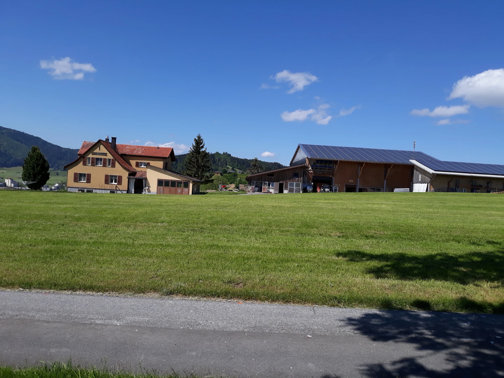
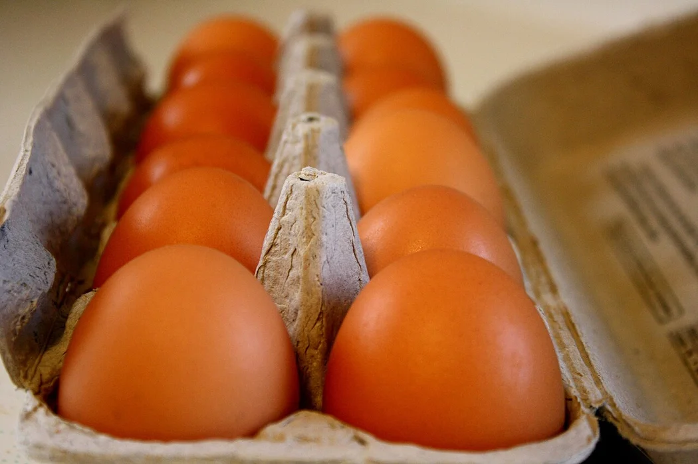
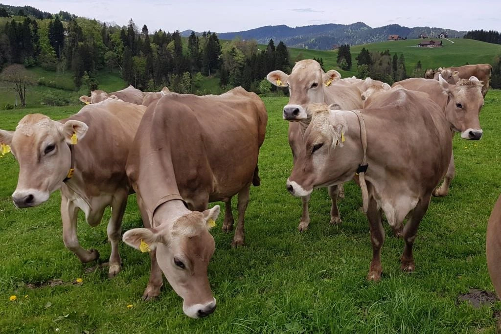
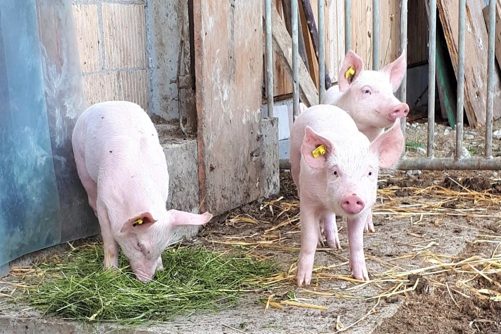
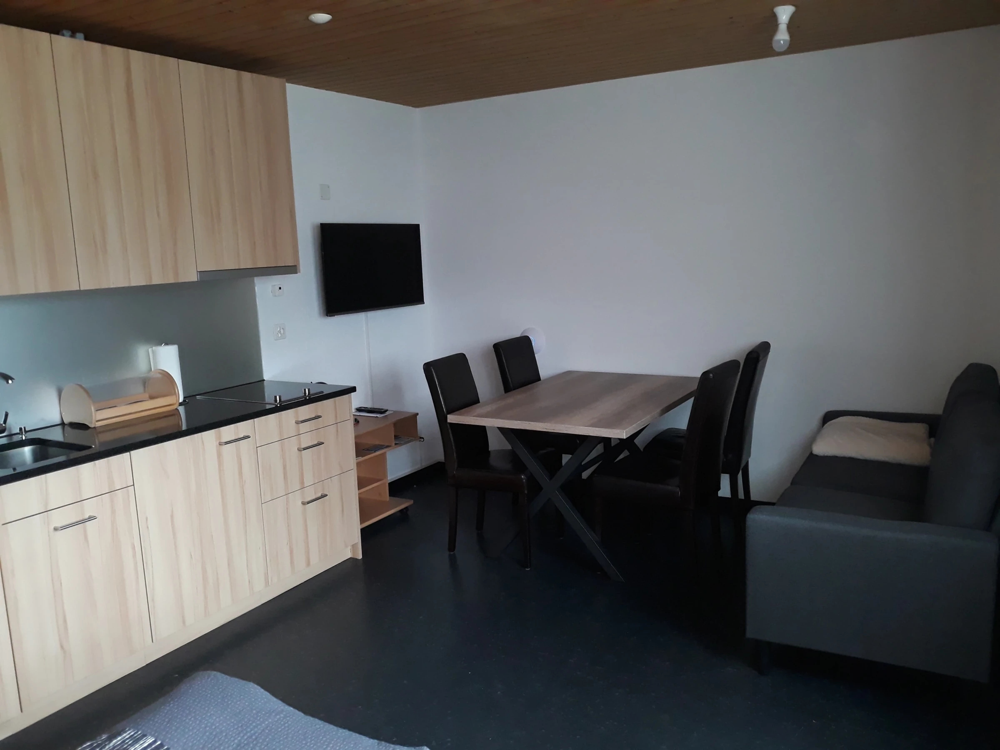
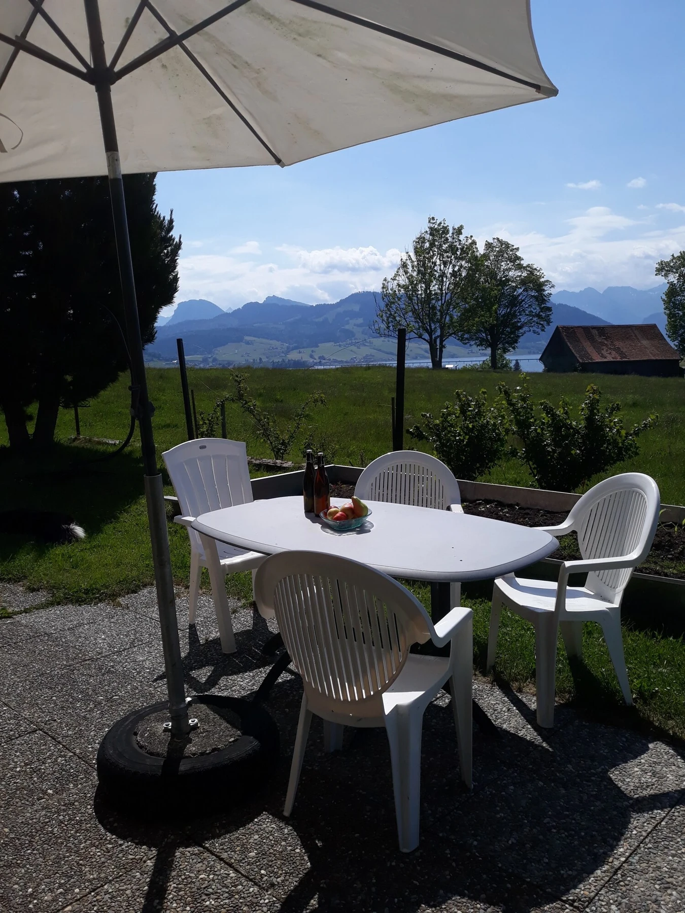
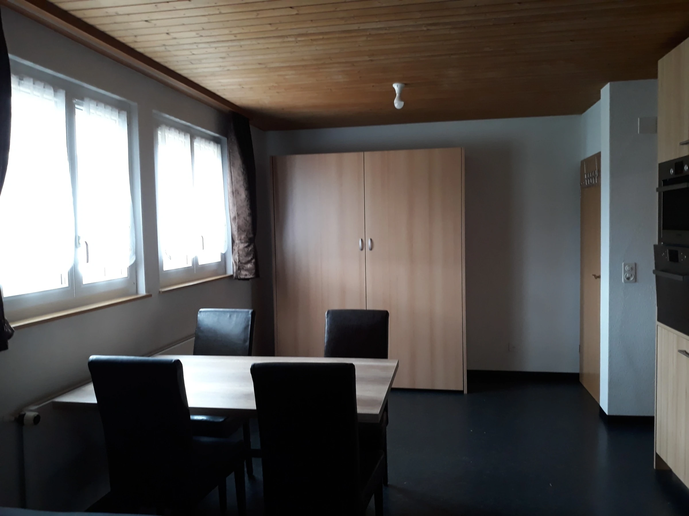
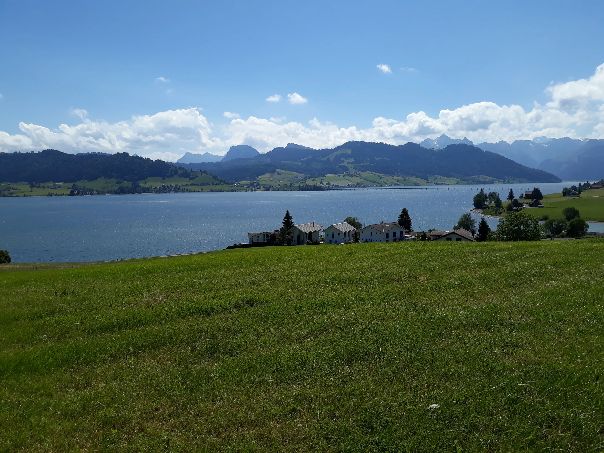
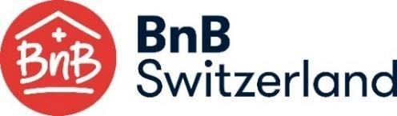

Üses Hoflädeli am Sihlsee
Bi üs z Äinsidle gits Eier und Heumilch direkt ab Hof. Üses Schwiinsfleisch chasch als Mischpaket vorbstelle – vo de Haxe bis zum Filet.
Mischpaket aafrouge
Schöin, chunsch verbiy!
Mir sind d Sabina und de Eugen. De Hof a de alte Etzelstrouss hend mir 1999 übernoh. Da läbed üsi Chüeh, Hüehner und Säuli.
Sabina & Eugen Schönbächler
Das gits bi üs uf em Hof

Eier ab Hof
Üsi Hüehner läbed i Bodehaltig. D Eier gits direkt bi üs uf em Hof.
Wäge de Eier nofrouge
Heumilch
Üsi Chüeh bechömed Gras und Heu. D Heumilch gaht a d Milchmanufaktur Einsiedeln – und du chasch si au direkt bi üs hole.
Wäge de Heumilch nofrouge
Schwiinsfleisch im Mischpaket
S chlinschte Mischpaket entspricht eme Viertel Schwiin und wiegt öppe 15 kg. Vo de Haxe bis zum Filet isch alles debii. Uf Wunsch vakuumiere mir d Portione.
Mischpaket aafrouge
Feriewohnig Alpenblick
I de heimelige 1½-Zimmer-Wohnig mit Blick uf de Sihlsee hesch e Chuchi und es Kajütebett fürs Chind. D Wohnig het Platz für bis zu vier Persone.
Priise aluege und direkt aafrougeWänn gits s nächschte Mischpaket?
Üses Schwiinsfleisch gits uf Vorbstellig. Schriib üs, wänn du es Viertel möchtisch. Mir säged dir, wänn du s Fleisch uf em Hof chasch abhole.
- Ab öppe 15 kg
- Vakuumiert uf Wunsch
Ferietäg am Sihlsee
Uf rund 930 Meter über Meer liit üsi Feriewohnig Alpenblick. Vom Hof us gsehsch de Sihlsee, d Bärge und s Dorf Einsiedle.
Am Morge chasch im Stall verbiyluege, wänn mir d Chüeh melke oder d Chälber tränke. Und wänn du wotsch, dörfsch au mit aapacke.
Priise und Buechig


D Feriewohnig Alpenblick
Was choschtet d Wohnig?
Richtpriise für d ganz Wohnig, wänn du direkt bi üs buechsch.
- Wuchewiis usserhalb vo de Ferie
- CHF 65 pro Tag
- Einzelni Täg oder während de Ferie
- CHF 75 pro Tag
- Endreinigung
- CHF 60 pro Ufenthalt
De Gesamtpriis für dini Date bestätiged mir dir mit de Antwort.
Wie isch d Wohnig igrichtet?
Uf 40 m² hets Platz für bis zu vier Persone. Im Wohnruum hets es Doppelbett zum Usklappe, im Chinderzimmer es Kajütebett. Es Chinderbettli gits uf Aafroug.
Zur Wohnig ghöred e Chuchi mit Gschirrspüeler, e Dusche mit WC, e Waschmaschine mit Tumbler und WLAN. Bettwösch und Frottéetüecher sind debii.
Was findi rund um de Hof?
D Badi am Sihlsee, s Dorf Äinsidle mit em Chloschter und d Milchmanufaktur liged im Umchreis vo rund zwei Kilometer.
Direkt bi üs aafrouge
Säg üs, wänn du cho möchtisch und wie vill Lüüt mitkömed. Mir melded üs mit de freie Date und em Priis. D Buechig gilt, wänn mir sie dir bestätiged.
eugensch@bluewin.ch · 055 412 71 66
Wohnig bi BnB aluegeBi BnB isch d ganz Wohnig für CHF 108 bis 135 pro Nacht usgschribe.